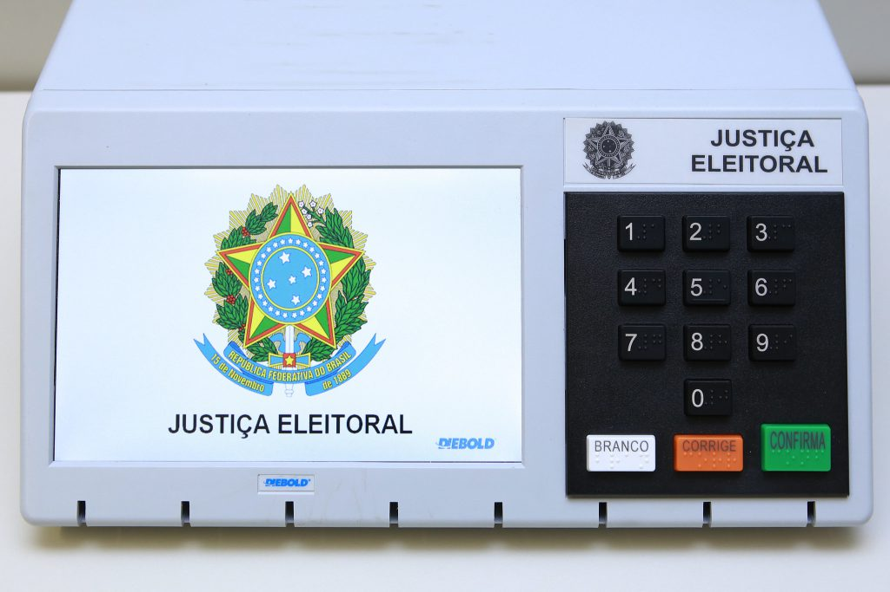

Brasil se Prepara para as Eleições Gerais de 2026 em Meio a Cenário Político Polarizado
Especialistas apontam que a corrida presidencial deve dominar o debate nacional, com foco em economia, segurança pública e políticas sociais.
Por Redação Política | 14 de Outubro de 2026

A menos de um mês para o primeiro turno, o cenário eleitoral brasileiro de 2026 se desenha como um dos mais acirrados das últimas décadas. A corrida presidencial tem dominado as manchetes e as conversas nas ruas, refletindo a forte polarização que marcou o início da década. As pesquisas de intenção de voto apontam uma disputa acirrada, com os eleitores demonstrando grande interesse pelas propostas dos pré-candidatos.
Os principais temas debatidos nos palanques e nos debates televisionados têm sido a retomada do crescimento econômico, o controle da inflação, a segurança pública nas grandes metrópoles e a sustentabilidade das políticas sociais. Além da disputa pelo Palácio do Planalto, os brasileiros também irão às urnas para renovar parte do Senado Federal, a Câmara dos Deputados e as Assembleias Legislativas estaduais.
A Justiça Eleitoral informou que todo o sistema de votação já passou pelos testes de segurança e está pronto para receber o eleitorado. A expectativa é de uma participação massiva, com milhões de brasileiros comparecendo aos locais de votação para exercer o direito ao voto. As autoridades reforçam a importância da checagem das informações e do combate às notícias falsas nas redes sociais.
"A expectativa é de que mais de 150 milhões de eleitores compareçam às urnas em outubro para decidir os rumos do país pelos próximos quatro anos."